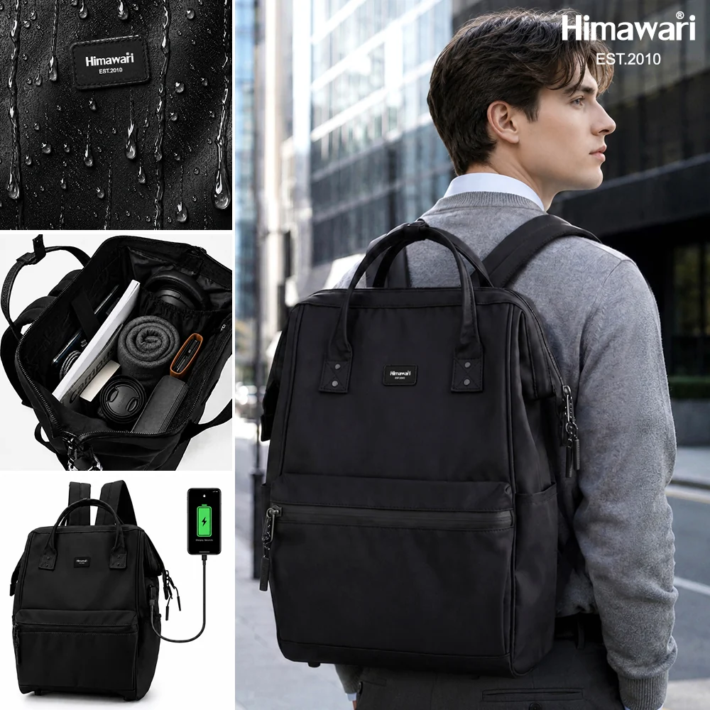

비 예보가 있는 날은 젖은 물건이 돌아올 자리까지

비 예보가 있으면 우산을 챙기지만 돌아올 때 그 우산을 어디에 둘지는 따로 생각해야 합니다. 출발 전에 마른 상태로 넣은 물건과 젖은 뒤의 물건은 같은 역할이 아닙니다. 가방을 사용할 실제 안내를 읽고 이동하는 동안 둘 자리, 개인 기기와 나눌 방법, 귀가 후 꺼낼 순서를 정해봅니다. 예보를 보고 물건을 추가하는 것에서 준비를 끝내지 않습니다.
먼저 가방과 가지고 갈 소지품의 안내를 확인합니다. 특정 표현이 붙었다는 이유로 모든 비와 물기를 같은 방식으로 다룰 수 있다고 생각하지 않습니다. 실제 제품에서 설명한 사용 조건과 관리 방법을 읽습니다. 필요한 정보가 없으면 모델과 현재 사용 상황을 적어 문의할 수 있습니다. 확인한 내용의 범위 안에서 외출의 구성을 정하면 됩니다.
우산을 넣을 때와 꺼낸 뒤
젖은 우산을 실내로 가져갈 때 사용할 커버나 보관 방법을 알아봅니다. 방문하는 장소에 정해진 보관 안내가 있으면 그 방식을 따릅니다. 가방 안에 넣을 계획이라면 다른 물건에 어떻게 닿는지와 실제 사용하는 커버의 안내를 확인해야 합니다. 우산을 담을 주머니가 있다는 사실만으로 안쪽 소지품까지 모두 보호된다고 정하지 않습니다.
마른 우산으로 집에서 한 번 넣고 꺼내보는 것도 방법입니다. 사용한 뒤 접는 모양이 같을지, 커버를 함께 쓸 때 필요한 공간이 있는지 생각합니다. 다른 소품을 먼저 꺼내야 하는 위치라면 출발 전에 배치를 조정할 수 있습니다. 밖에서 새 보관법을 처음 시도하기보다 실제 쓰는 도구의 방식에 익숙해질 준비입니다.
비를 피해 잠시 가방을 내려놓는 상황도 떠올려봅니다. 어디에 둘 수 있는지는 현장의 안내와 눈에 보이는 상태를 기준으로 봅니다. 젖은 바닥이나 음료가 있는 곳을 임시 보관 장소로 생각하지 않습니다. 끈이 길게 밖으로 놓이는지와 다른 사람의 통행을 막는지 살펴보고, 다시 멜 때 바닥에 닿았던 면을 확인합니다.
비 예보가 있는 외출의 제품 자료로 Himawari No.1884를 함께 소개합니다. 오늘의 우산과 개인 소지품을 준비한 뒤 실제 가방에서 마른 물건과 사용 후 물건의 위치를 나누어봅니다. 제품의 이름에서 필요한 보호 조건을 대신 읽어내기보다 사용하는 안내를 확인하세요. 외출 뒤에는 이 임시 묶음부터 꺼낼 수 있게 두는 편이 정리에 맞습니다.

기기와 종이가 닿는 위치
노트북이나 개인 기기를 가져간다면 제조사의 이동과 보관 안내를 먼저 따릅니다. 사용하는 케이스를 포함한 구성으로 배치를 봅니다. 젖은 물건을 같은 묶음에 느슨하게 넣는 대신 각각의 위치를 구분하세요. 어떤 주머니나 포장을 썼다는 이유만으로 모든 상황에서 필요한 보호가 확인됐다고 생각하지 않습니다.
서류나 종이 물건도 현재 사용하는 파일과 함께 봅니다. 우산을 꺼낼 때 종이 묶음을 매번 같이 꺼내야 한다면 두 위치를 바꿀 수 있습니다. 비 오는 길에서 여러 소지품을 펼치기보다 멈출 수 있는 곳에서 필요한 물건만 꺼내는 흐름을 생각합니다. 실제로 사용 중인 조합으로 넣고 꺼내보면 준비할 순서가 분명합니다.
필요한 물건을 줄일 수 있는 일정이라면 비에 노출될 짐의 구성을 다시 정할 수 있습니다. 모두 빼야 한다는 규칙은 아니며 실제 활동에서 사용할지 판단합니다. 가져가기로 한 기기에는 해당 안내에 맞는 운반 방법을 마련합니다. 확인되지 않은 보호 방법을 새로 만들어 필요한 조건을 충족했다고 생각하지 않습니다.
집에 들어오면 임시 묶음부터
귀가하면 우산과 젖은 물건을 먼저 꺼내 각 제품의 안내대로 정리합니다. 커버나 임시 주머니도 함께 살펴봅니다. 겉이 마른 것처럼 보여도 가방 안쪽의 현재 상태는 직접 보아야 합니다. 바닥과 여밈 주변, 실제로 물건이 놓였던 부분을 확인하고 필요하면 제품 관리 안내에 맞춰 정리합니다.
건조 방식은 제품의 실제 표기를 기준으로 정합니다. 임의로 열을 가하거나 다른 제품의 세척법을 옮겨 적용하지 않습니다. 내용물을 다시 넣을 수 있는 상태인지 확인한 뒤 사용합니다. 오늘은 겉면만 보았고 안쪽을 확인하지 못했다면 그 부분을 남겨두고 다음 사용 전에 살펴볼 수 있습니다.
가방이나 소지품에서 이상을 발견하면 위치와 상황을 기록합니다. 어디에서 젖은 상태를 보았는지, 함께 넣었던 물건은 무엇인지 자신이 아는 내용만 남깁니다. 원인을 바로 확정하지 않고 해당 제품의 안내와 문의 방법을 확인합니다. 사진에는 전체와 해당 위치가 알아보이게 남기면 상태를 설명하는 자료가 됩니다.
다음 날의 가방은 새 상태로 보기
다음 사용 전에는 여밈과 끈 등 평소 조작하는 부분을 직접 확인합니다. 눈에 보이는 손상이나 작동이 달라진 부분이 있으면 제품의 관리·수선 안내를 알아봅니다. 어제 한 번 사용했다는 결과로 이후 모든 비에도 같은 상태가 유지될 것이라 생각하지 않습니다. 현재 상태와 실제 안내를 기준으로 다시 정합니다.
우산 커버와 주머니를 다시 준비할 때는 전날 사용한 묶음을 비웠는지 확인합니다. 기기와 종이를 오늘도 가져갈지 일정에 맞춰 선택합니다. 비 예보에 따라 짐을 하나 더 넣기 전에 마른 상태와 사용 후 상태가 각각 돌아갈 곳을 정해보세요. 문을 나설 때 우산의 위치를 알고, 귀가하면 임시 묶음부터 꺼낼 수 있는 흐름으로 이어갑니다.